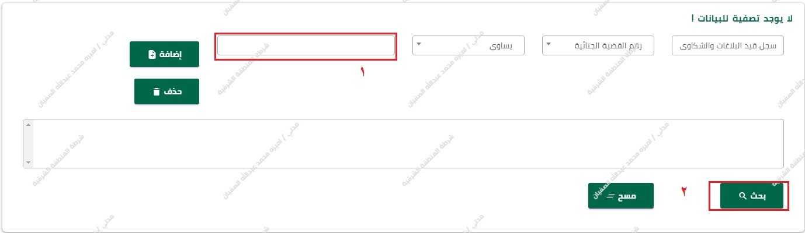
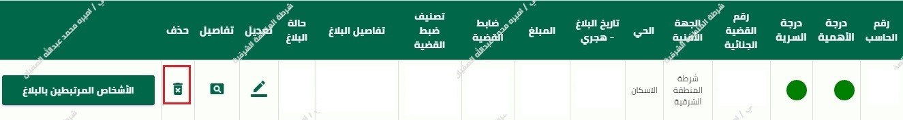

حذف قضية
سجل البلاغات و الشكاوي
اولاً الضغط على سجل قد البلاغات و الشكاوي كما هو موضح في الصورة

ثانيا من القائمة المنسدلة قم بإختيار رقم القضية الجنائية
أدخل رقم القضية الجنائية داخل مربع النص ثم اضغط على زر البحث
ثالثاً اضغط على أيقونة الحذف. ثم اضغط على زر تأكيد الحذف
---------------------------------------------------------------------------------------
ثانياً استمارة التسجيل الجنائي
إذا لم تستطيع إيجاد القضية المراد حذفها من خلال سجل قيد البلاغات والشكاوي ننتقل إلى استمارة التسجيل الجنائي.
أولاً من القائمة التي على اليمين اختر الحادث الجنائي

ثانياًاختر استمارة التسجيل الجنائي.

ثالثاً أدخل رقم القضية في مربع النص ثم اضغط على بحث

رابعاًاضغط على أيقونة الحذف

خامساًاضغط على زر تأكيد الحذف